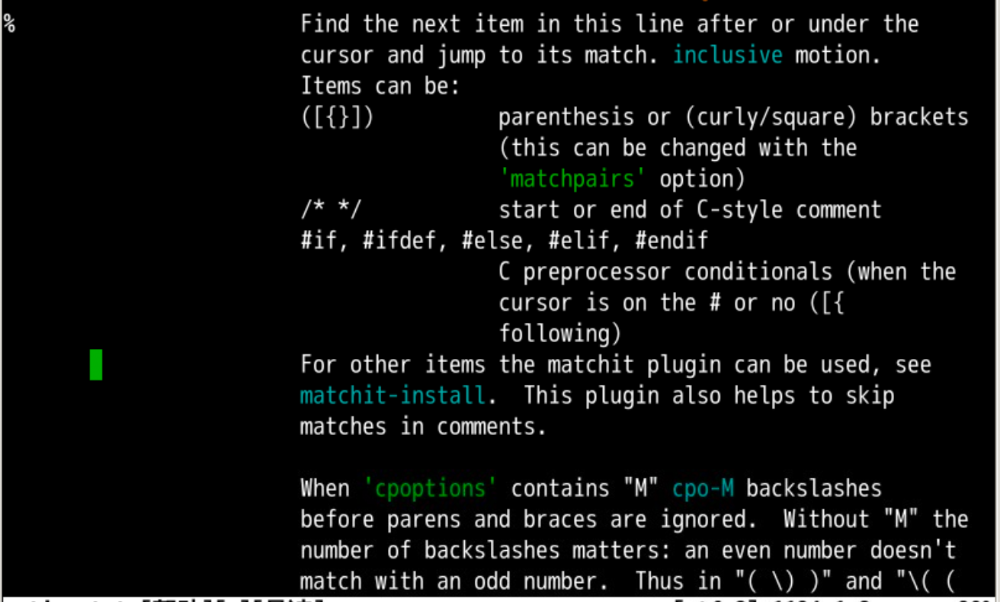
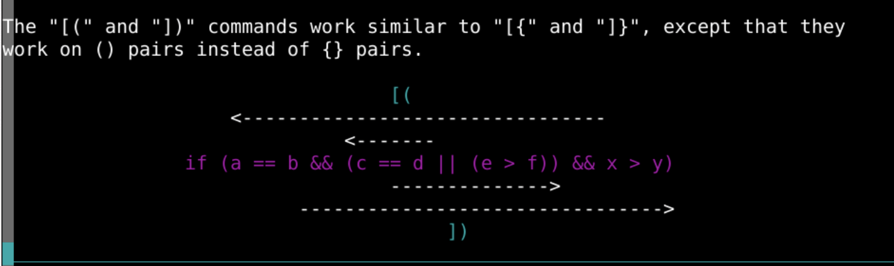
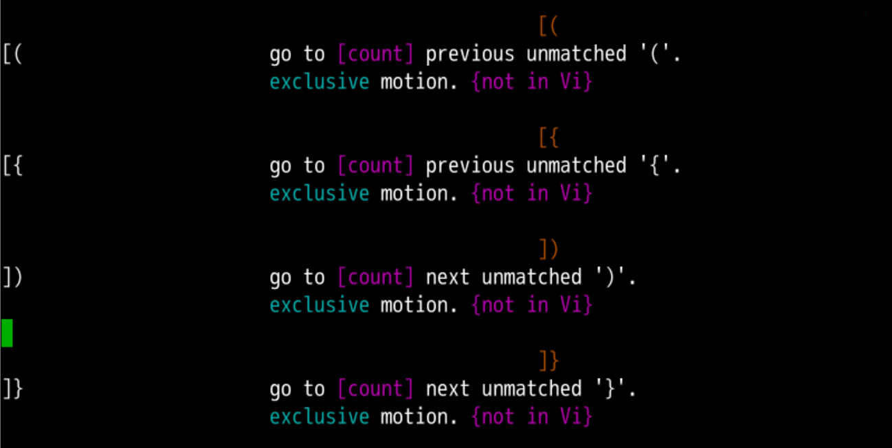
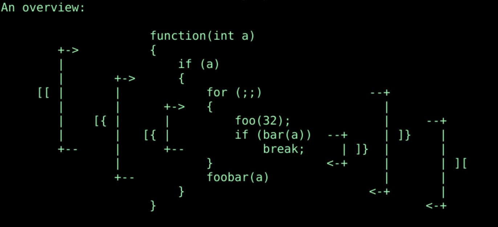
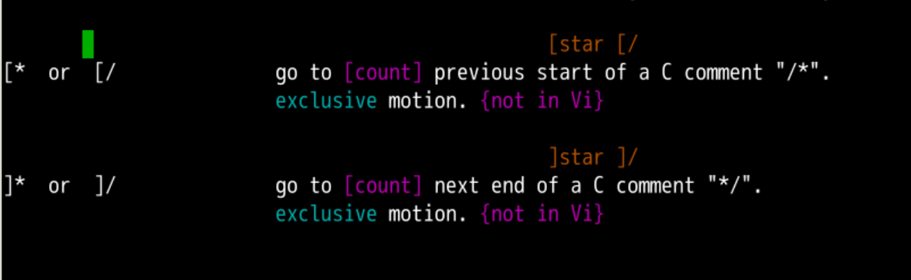
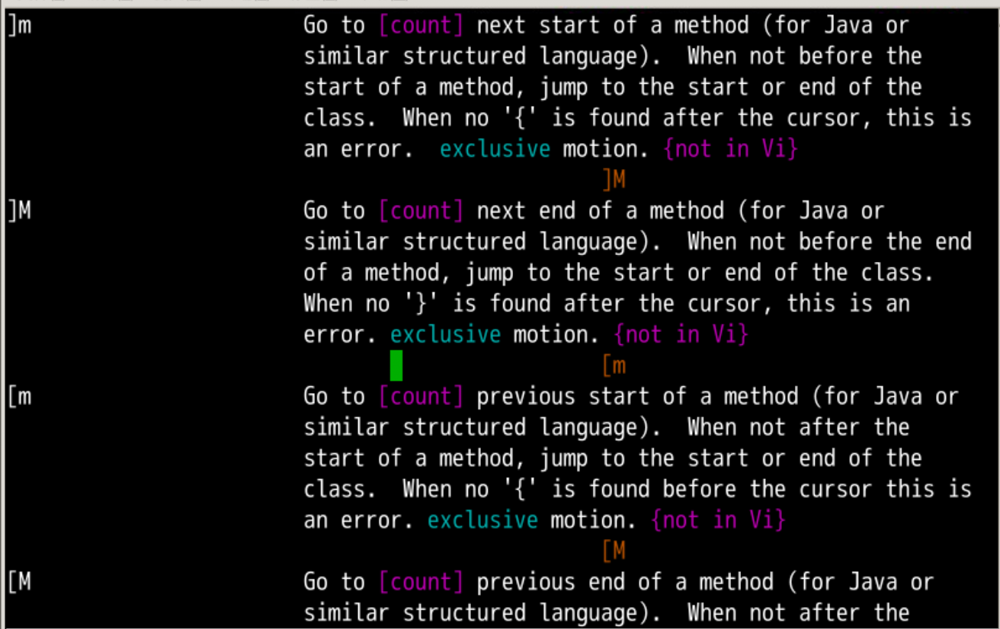
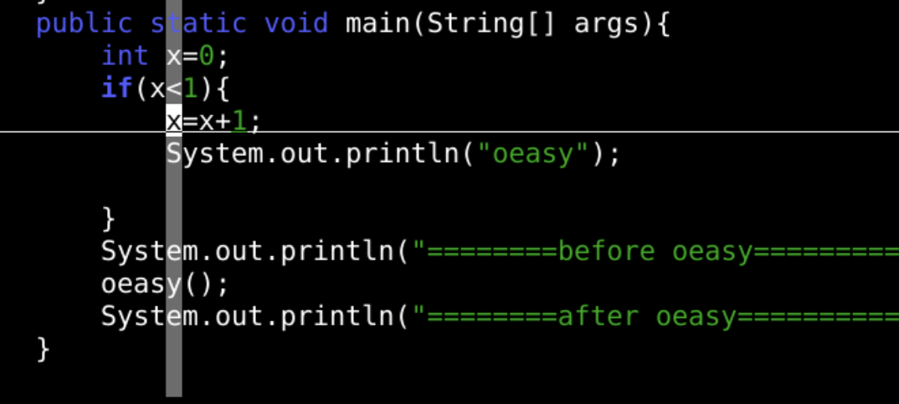
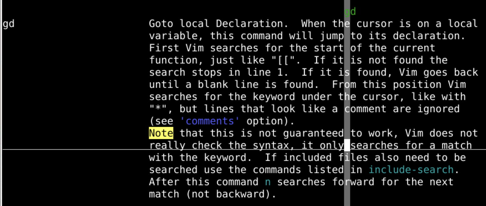
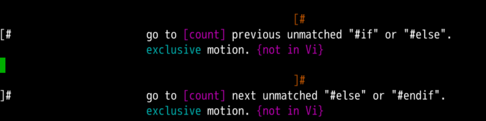
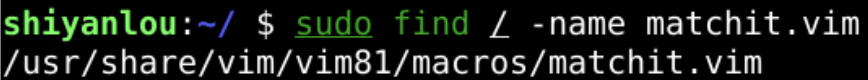

#首先下载文本找到tomsawyer.txt
git clone http://gitee.com/overmind1980/oeasyvim.git
#然后把文本打开
cd oeasyvim
vi oeasy.java
public static void main(String[] args) 中的 小括号( 上% 跳转到括号对的前半部分% 在这对儿括号的两个位置指间跳转% 不但对于小括号有用，对于成对的大括号、中括号也都有用% 不支持 [count]

方向
如果是大括号呢？

[( 跳转到上一个没配对的 (]) 跳转到下一个没配对的 )[{ 跳转到上一个没配对的 {]} 跳转到下一个没配对的 }支持 [count]
向上就是[

[/、[*上一个注释/* .... */的头]*、]/下一个注释/* .... */的头

- 函数跳转 -]m下一个函数开头
- ]M下一个函数结尾
- [m上一个函数开头
- [M上一个函数结尾
- 支持 [count]
- 3]m 可以往下跳到第 3 个函数开头
- [m、]m 这两个其实还挺好用的


[[ 的范围内的第一个[# 上一个没有配对的 #if、#else]# 下一个没有配对的 #else、#endif
#查找matchit.vim
sudo find / -name matchit.vim
# 把match.vim插件放到系统插件文件夹
sudo cp /usr/share/vim/vim81/macros/matchit.vim /usr/share/vim/vim81/plugin
#打开一个网页
vi oeasy.html

<html> 处按下 % 就可以到配对的 </html> %不成对括号间跳转
[[ 跳转到本块第一行]] 跳转到本块最后一行[{ 跳转到上一个的 {]} 跳转到下一个的 }函数间跳转
]m 下一个函数开头[m 上一个函数开头]M 下一个函数开头[M 上一个函数结尾
#if、#else、#endif 没有配对的
[# 上一个没有配对的 #if、#else]# 下一个没有配对的 #else、#endif
注释的头尾
[/、[* 上一个注释 /* .... */ 的头]*、]/ 下一个注释 /* .... */ 的头